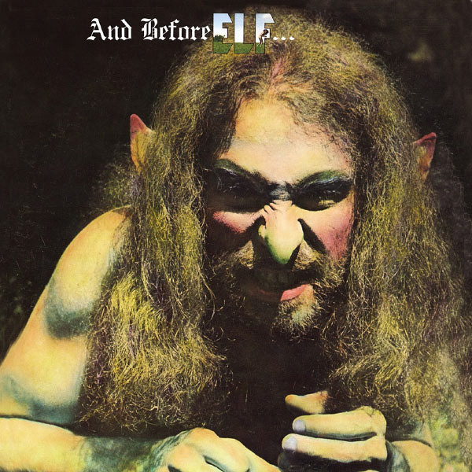
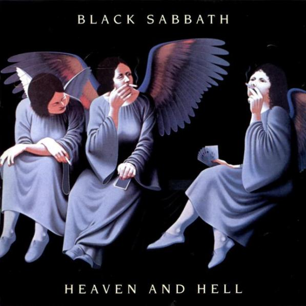
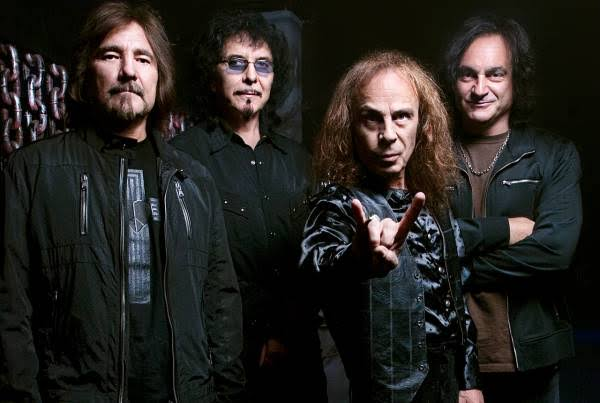

Historia
Sus Incios
“Dio” nació en Portsmouth, New Hampshire (Estados Unidos) el 10 de julio de 1942, en una familia italo-americana muy católica. Ronald James Padavona fue hijo único, criado en la localidad de Cortland (cerca de Nueva York), donde le tocó “sufrir” ser educado en el catolicismo romano. Nació con vocación de jugador de béisbol, él se lo dijo a su padre y éste le compró una trompeta… Ronnie tampoco lo entendió pero se puso a ello y, tras años de mucha práctica diaria, aprendió a controlar su respiración a la perfección, ideal para tocar su instrumento pero sobre todo para convertirse en “el mejor cantante de rock de la historia”. De hecho, él atribuye su técnica perfecta a eso, ya que nunca tomó clases de canto. Eso sí, tampoco bebía mucho ni fumaba… y por supuesto está el talento natural, la personalidad y unas capacidades vocales especiales. Ronnie en 1957 era trompetista y bajista en THE VEGAS KINGS, después llamados RONNIE AND THE RUMBLERS. Cuando pudieron pasar de las fiestas escolares y locales pequeños a salones más grandes, se llamaron RONNIE AND THE RED CAPS, nombre que duró varios años más. Al irse el cantante de la banda, que había puesto la voz en el único single que sacaron (“Conquest”, Ronnie ya empezó a cantar. Al principio tímido y timorato pero pronto se soltó consciente de que tenía un don para ello… y que no lo hacía nada mal. Empezaron la década de los 60 con muchos cambios: Se rebautizaron como RONNIE AND THE PROPHETS, y también se fue el saxofonista y le sustituyó un segundo guitarrista. Y siendo ya algo populares a nivel local, Ronnie se rebautizó como “Dio”, adiós a Padavona.
Etapa RONNIE AND THE PROPHETS
En 1967 se llamaban RONNIE AND THE PROPHETS o RONNIE AND THE ELVES, según donde tocaran (dependía de si les conocían de antes o no).“The elves” (los enanos) era el apodo cariñoso para Ronnie y para su guitarrista Nick Pantas, muy bajitos y con suficiente sentido del humor. Acabaron la década llamándose THE ELVES, hasta que Pantas murió en un trágico accidente y la banda desapareció. Tras superar este duro golpe, Ronnie, ya sin su trompeta pero aún con el bajo, y sus nuevos compañeros (entre ellos su primo segundo David Fenstein, posteriormente cantante de los geniales THE RODS, todavía en activo de hecho) se llamaban THE ELF y tocaban para llamar la atención de alguien que les fichara. Al empezar 1972 Ian Paice y Roger Glover (batería y bajista respectivamente de DEEP PURPLE) les vieron hacer una audición, y convencieron a Columbia para que les produjera un álbum. Tras grabarlo y tras algún nuevo cambio de formación, Ronnie se dedicó solo a cantar. Cambiaron su contrato a MGM Records en Estados Unidos y a Purple Records en Reino Unido, y grabaron su segundo álbum, producido por Glover (bajista de PURPLE y posteriormente también de RAINBOW muchos años, e incluso de la primera encarnación de WHITESNAKE). En Estados Unidos se llamó “LA 59”, y en Gran Bretaña fue “Carolina County Ball”, con portadas diferentes. Telonearon a DEEP PURPLE por Estados Unidos, y Ronnie cantó tres temas en el disco en solitario de Glover, “Butterfly Ball And The Grasshopper’s Feast”.
Etapa ELF y Rainbow
Con ELF creciendo rápidamente, Ritchie Blackmore, por mediación entendemos de sus aún compañeros entonces, les invitó a grabar con él el single “Black Sheep of the Family” (del grupo QUATERMASS). Tras otro intento fallido de repetir la experiencia (“Sixteenth Century Greensleeves”, de Ronnie, no se llegó a editar), ELF grabó su tercer álbum, otra vez con Glover. Blackmore dejó DEEP PURPLE y convenció a ELF para que despidieran a su guitarrista, se unieran a él y formasen un nuevo grupo: nace RAINBOW. Por cierto, también convenció a Ronnie para que añadiera el “James” a su nombre. 1975 es un año convulso. Blackmore y ELF grabaron disco en Alemania, se retrasó la publicación del álbum de ELF, el ex DEEP PURPLE fue despidiendo poco a poco a varios miembros de ELF, antes y después de publicar “Ritchie Blackmore’s Rainbow” (a Blackmore no le gustó ver su nombre ahí –pero entonces era el principal gancho comercial- así que los siguientes álbumes saldrían solo como RAINBOW). Entraron en la banda Cozy Powell (otro de los baterías míticos de la historia, que venía de tocar con Jeff Beck entre otros, y que posteriormente tocaría muchos años con MSG y también con BLACK SABBATH, además de muchísimos trabajos de sesión con los más grandes… hasta fallecer en accidente de tráfico en 1998), el teclista Tony Carey y el bajista Jimmy Bain (estos dos últimos se irían entre el segundo disco, y el directo… aunque ambos tendrán relación posterior con la carrera de DIO). En 1978 vio la luz “Long Live Rock N’ Roll”, con nuevos músicos, y con grandes himnos: “Long Live Rock ‘n’ Roll”, “Gates of Babylon” y “Kill The King” entre ellos. Si el primero era bueno, y “Rising” del 76 confirmaba la calidad suprema de esta banda (reflejada además con un excelente directo como es “On stage” que salió en el 77), este tercero ya es excelente, y la confirmación de RAINBOW como nueva banda de primera línea, y de Dio como uno de los mejores cantantes de hard rock.
Volvieron a cambiar la formación, volviendo Roger Glover a trabajar con Blackmore y con Dio. Ritchie pidió a Ronnie que compusiera temas sin magos, brujas y elementos medievales, curioso… pero parece ser que no se pusieron de acuerdo ni en eso ni en hacer que su sonido resultara más comercial .Blackmore despidió a todos menos a Powell y Glover al acabar ese año.
Black Sabbath
Ronnie James Dio, ya popular y admirado, no tuvo tiempo de crear su propia banda (aún), pues Tony Iommi le llamó, que estaba cansado de BLACK SABBATH y de Ozzy Osbourne. Se plantearon crear una banda nueva, pero al final Iommi despidió a Ozzy y contrató a Ronnie. La misma noche en que lo hablaron compusieron “Children of the Sea”
zz De cualquier manera, un año después, en abril de 1980, se publicó “Heaven and Hell”, un disco mítico, legendario y excelente que supuso el resurgir de BLACK SABBATH tras una época sombría y errática, y la vuelta de Iommi a sonidos pesados y duros (tras dos álbumes experimentales más cercanos al rock más comercial, que no funcionaron), más próximo al heavy metal que se hacía en los 80 como decíamos. Las buenas críticas de medios y fans fueron unánimes, como también lo fueron las reticencias de los fans de la “etapa clásica” de SABBATH a aceptar a Ronnie como nuevo cantante de la banda, las cosas como son. Con Vinnie Apice como nuevo batería, nos dejaron himnos inmortales como la citada “Children of the sea” o por supuesto “Die Youg”, “Lady evil” o el propio “Heaven&Hell”. Luego publicaron “The Mob Rules”, y “Live Evil” (1982) en directo… Después de la edición del disco en directo, Ronnie James Dio abandonó definitivamente Black Sabbath (donde más tarde regresaría fugazmente en 1992 para grabar Dehumanizer), para fundar su propio grupo llamado Dio. Dio debutó en 1983 con Holy Diver, el cual consiguió ser disco de oro en 1989, con éxitos como Stand Up and Shout, Rainbow in the Dark, Don't Talk to Strangers y Holy Diver. En la portada se veía a un demonio lanzando a un clérigo encadenado al mar. Dio siguió sacando grandes discos de hard rock y heavy metal durante los ochenta: The Last in Line (1984), Sacred Heart (1985), Intermission (1986) y Dream Evil (1987). Y en los noventa: Lock up the Wolves (1990), Strange Highways (1994), Angry Machines (1996) y el directo Inferno - Last in Live (1998). Sus últimos discos de estudio fueron el conceptual Magica (2000), Killing the Dragon (2002) y Master of the Moon (2004). Durante su última gira grabó el directo Holy Diver Live (2006). Ronnie James Dio, aun siendo ya sexagenario, continuó grabando discos y realizando giras y conciertos. Volvió a reunirse con los antiguos miembros de Black Sabbath en Heaven and Hell y realizaron una gira mundial durante 2007-2009 en la que pasaron por Europa, Asia, Estados Unidos, México y Sudamérica.
En 2006 tuvo una participación en la película Tenacious D: The Pick of Destiny, protagonizada por Jack Black y Kyle Gass, componentes del grupo Tenacious D. En abril de 2009 salió a la venta el nuevo disco de la formación de Heaven and Hell, llamado The Devil You Know. El álbum contó con diez canciones nuevas y fue motivo de una gira mundial. El primer sencillo de dicho álbum fue la canción Bible Black. El 25 de noviembre de 2009, Wendy Dio, esposa y mánager, anunció que le habían diagnosticado a Ronnie cáncer de estómago: El 4 de mayo de 2010, los demás integrantes de Heaven & Hell anunciaron que estaban cancelando todas las fechas de conciertos programados para el verano como consecuencia del delicado estado de salud de Dio. El 14 de mayo Dio fue hospitalizado debido a que el dolor le resultaba insoportable. Al día siguiente, según escribió el bajista Geezer Butler en su página oficial, no había duda de que el final era inminente. Había entre 25 y 30 de los amigos más cercanos de Dio esperando fuera de su habitación para darle su último adiós. Más tarde esa noche casi todos se fueron, dando privacidad a Wendy para decirle su último adiós. La muerte de Dio se produjo el 16 de mayo de 2010